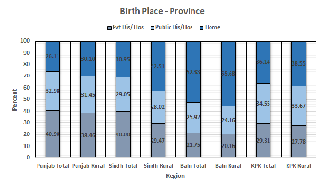
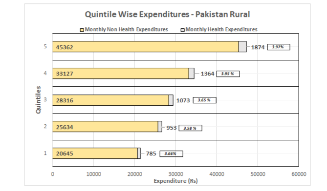
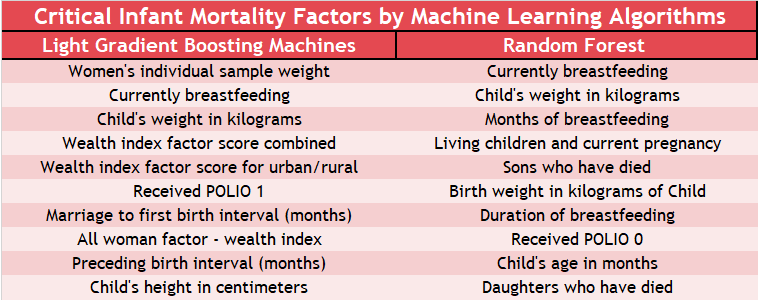
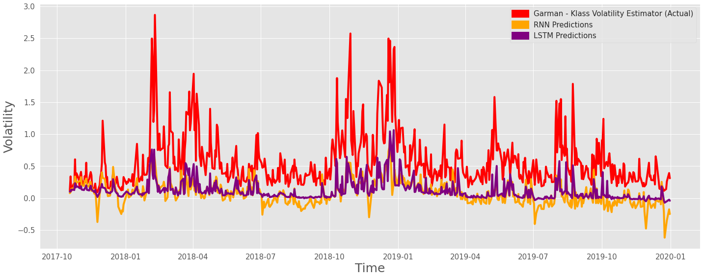

Portfolio123
Macro Analysis and Research
Macro Analysis of Pakistan Health Sector
A Data Analysis project for Indus Hospital & Health Networks
Problem Statement
To create a broad understanding of health deficiencies experienced by Pakistan population and identify Most Disadvantaged Districts (MDDs) in Punjab, Sindh and Balochistan.
Project Execution
Data Sets: Census 2017, Pakistan Social Living Measurement Survey (PSLM) 2019-2020, Pakistan Maternal Mortality Survey (PMMS) 2019, Pakistan Demographic & Health Survey 2017-2018 (PDHS), Household Integrated Economic Survey (HIES) 2018-19
- Analyzed and explored the exact status of Public Health Care Delivery (PHC) at country and provincial levels.
- Summarized and presented the current status of health parameters in mortality, prevalence and disease incidence in Pakistan and compared with peer countries like Bangladesh, India, Srilanka and others.
- Explored Pakistan Demographics and statistically selected Most Disadvantaged Districts (MDDs) on basis of PHC Delivery, Social Living Measurement (SLM) and Burden of Disease (BOD) indicators.
- Analyzed Quintile Wise Health and Non Health Expenditure Analysis by provinces.
- Suggested the Intervention Plan to deliver PHC to these MDDs through Mobile PHC units.


Infant Mortality Modelling
Problem Statement
To predict the infant mortality and infant’s survival chances in Pakistan.
Project Execution and Results
Data Sets: Pakistan Demographic & Health Survey 2017-2018 (PDHS)
- Developed and Deployed data Application to train classification models predicting the chances of infant survival based on Demographic, Health & Social factors.
- Novel idea to develop infant mortality predictions using demographic and health survey data as previous works involved use of health cards.
- Applied data cleaning, feature selection and machine learning algorithms such as Neural Networks to analyze the social and demographic factors of infants such as previous birth history, infant’s height and weight and family wealth index.
Clustering Countries on Socio-Economic Indicators
Problem Statement
To assist the CEO of HELP International in identifying the countries that require financial aid.
Project Execution and Results
Data Set: HELP International
- Categorize countries according socio-economic factors and determine the overall development level of the country.
- Recommend countries that need the most attention in aid including Afghanistan, Congo and Malawi using K-means clustering



Interactive Applications & Dashboards
BI Dashboard for an E-commerce Platform
Problem Statement
To create dashboards for the internal functions of an online retail company.
Project Execution and Results
- Built dashboard using business metrics and data visualizations.
- Customer Analysis shows customer by market segments and their buying patterns.
- Key metrics such as top selling products and sales trends over time helps assess business performance in real time.
- Return Analysis shows type of product return and explores its causes to reduce return outward.


National Electronic Injury Surveillence Data Exploration
Problem Statement
To explore how accidents occur in the United States.
Project Execution
Data Set: NEISS Injury Data
- Developed a Shiny Application to let user interact and explore the rate of incidence of injuries by gender and age.
- Provided an inter related overview of the causes of injury and body parts effected.
- The application tells a data story from patient’s narratives on his injury.
Predictive Modelling
Product Recommendation
Problem Statement
To recommend products to customers considering their previous buying patterns and behavior.
Project Execution and Results
Data Set: Market Basket Analysis
- Created frequent itemsets using retailer’s sales data applying apriori algorithm.
- Generated top five association rules based on lift values.
- Elevated increase traffic of customers to increase sales revenue and retain existing customer base.
Stock Volatility Forecasting
Problem Statement
To compare performance of various Econometric and Deep Learning Algorithms for stock volatility forecasting
Project Execution
Data Set: Yahoo Finance API
- Concluded that Econometric techniques have better forecasting power and narrower Confidence Intervals.
- The paper will help analysts and investors to understand the future stock market trends and to invest in less volatile stocks.


Training & Teaching
Data Analytics training at IBA, Karachi
Course Name: Data 101 - Data Analytics in Python
Designed an intro level course at Institute of Business Administration (IBA) for all non technical students of various background and impacted more than 500 students in learning basics of Data handling techniques in Python.
Explained and implemented basics of Machine Learning algorithms like Decision Trees, K means, Random Forest and Clustering algorithms.
Online R software training
Course Name: R for Economics and Finance
Taught students from IBA, LUMS, NUST and other universities about R programming, data cleaning, exploratory analysis, statistical analysis and modelling.
More than fifty students have attended the classes and implemented the taught techniques in research and data analysis in their respective fields.